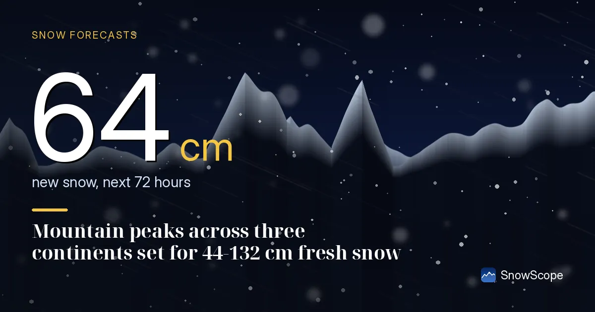
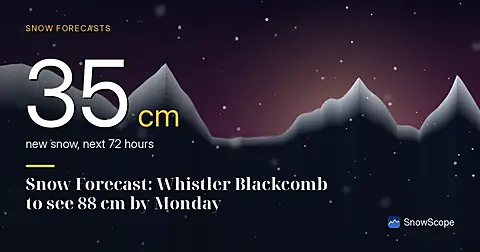
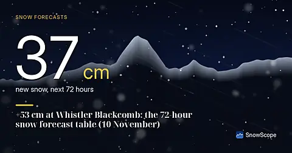
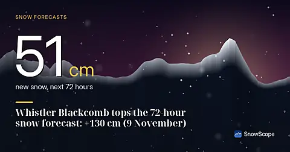
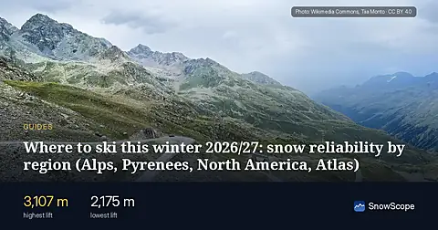

Snow reports · Snow regions
Snow regions: Three regions are about to see substantial snow. Jungfraujoch Snow Fun Park tops the Alps with 44 cm expected in the next 24 hours, …
Mountain peaks across three continents set for 44-132 cm fresh snow

Three regions are about to see substantial snow. Jungfraujoch Snow Fun Park tops the Alps with 44 cm expected in the next 24 hours, while Mount Cain Alpine Park in Western Canada will receive the most snow overall: 132 cm in the next 72 hours.
Europe's heavy snow arrives now
The Alps are locked in a snow event starting today. Jungfraujoch Snow Fun Park leads the European resorts with 44 cm of new snow forecast to fall in the next 24 hours, then 64 cm by the end of the 72-hour window. That means the heaviest falls arrive first, over the high peaks above 3,400 m. Engelberg Titlis follows closely with 38 cm tomorrow, adding up to 48 cm total.
The snow line sits around 1,900 to 3,100 m across the Alps over the next three days. Lower resorts will see less accumulation and more of their snow on higher slopes. Alpe d'Huez Grand Domaine and La Grave both forecast 57 cm in 72 hours, but La Grave—at 3,543 m—will capture the best snow higher up, while Alpe d'Huez will see the main snow band drop below 1,900 m, spreading the new snow over a broader range.


Pick a region, dates, budget and what matters; get every resort ranked with the likely snow at the start, the pass, hotel and food per person, chalets to book, and a game mode.

How much snow will the mountains gain? Our table shows the resorts with the most new snow forecast for the next 24 hours and until 22 November, in …


December snow odds from 46 winters and checked day prices: Ski Cooper $49, Les 3 Vallées €75.70, Oukaïmeden no official tariff. Where a cheap December ski day works.

La Grave's snowpack grew 17 cm in a week to 43 cm on 14 November, now forecast to gain 61 cm over the next 72 hours as a system moves across the Alps.

SnowScope's peak finder is a free peak finder app: point your phone at the mountains and it names the summits, with height, distance and climb time. Our tests: 98 % of the summits it lists are really in sight, and on real photos it corrected compass errors of up to 105° to 0.15°. Free with 3 names, every peak for $0.99 once.

Himalaya snow cover in November 2026 from NASA MODIS: snow on 610,409 km² of ground above 2,000 m between the Hindu Kush and Bhutan, half the clear ground white from about 4,800 m in Nepal and 3,600 m in the Karakoram. The NDSI explained, plus shadows, cloud and the low autumn sun.

Whistler Blackcomb leads a 72-hour snow surge with 88 cm forecast by November 16, 2026. Major snowfall also expected across the Alps and US Sierra.


We compared the snow on 10 November with each winter's deepest snow at 46 ski resorts over 46 winters. A snowy start helps, but less than many skiers think.

A slope map of Les Grands Montets and seven other ski areas shows how much of the ground is steeper than 30°, 35° and 40°, and why that line matters for avalanches.

Whistler Blackcomb leads with 53 cm in 72 hours. Snow forecast across Europe, US and Canada on 10 November.

100 mountain ranges mapped on 9 November 2026: Western Canada leads with 123 cm, the Alps have thin early snow, and 17 ranges are still bare.

SnowScope checks its daily snow map against 2,012 mountain stations. On 9 November 2026, the map was within 7.7 cm typical error and right 88% of the time.

Whistler Blackcomb leads the three-day snow forecast with 130 cm by 12 November. SnowScope tracks new snow across the Alps, US West and Western Canada on 9 November.



Which resorts keep snow all winter? We checked 46 past winters. In the Alps, 211 of 1,178 resorts are snow-sure; the US West has 77 of 195. Data from 3 November 2026.

Chabanon leads the Alps with 37 cm forecast in 72 hours. Mt Baker tops the US West with 11 in (28 cm). Ski Callaghan heads Canada with 33 cm by 6 November.

Snow on 3 November 2026: Kendall Mountain 53 in (134 cm) after a storm, Big White 91 cm, the Alps up to 55 cm at Bonneval-sur-Arc.